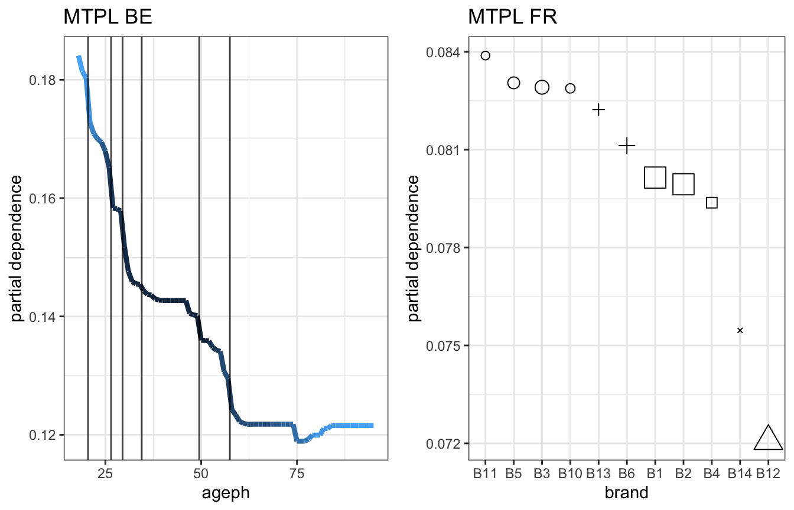
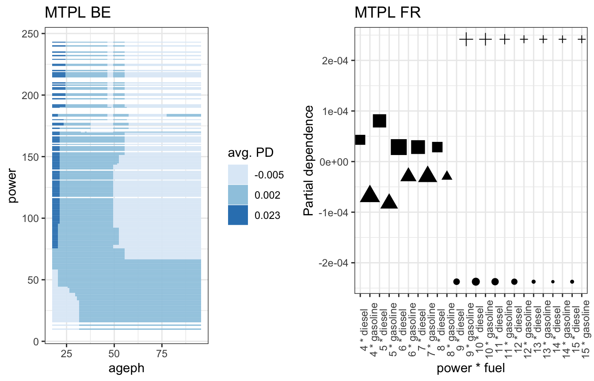
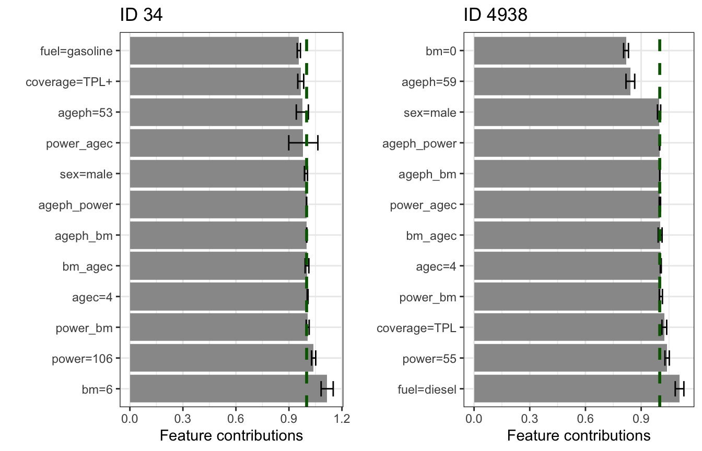
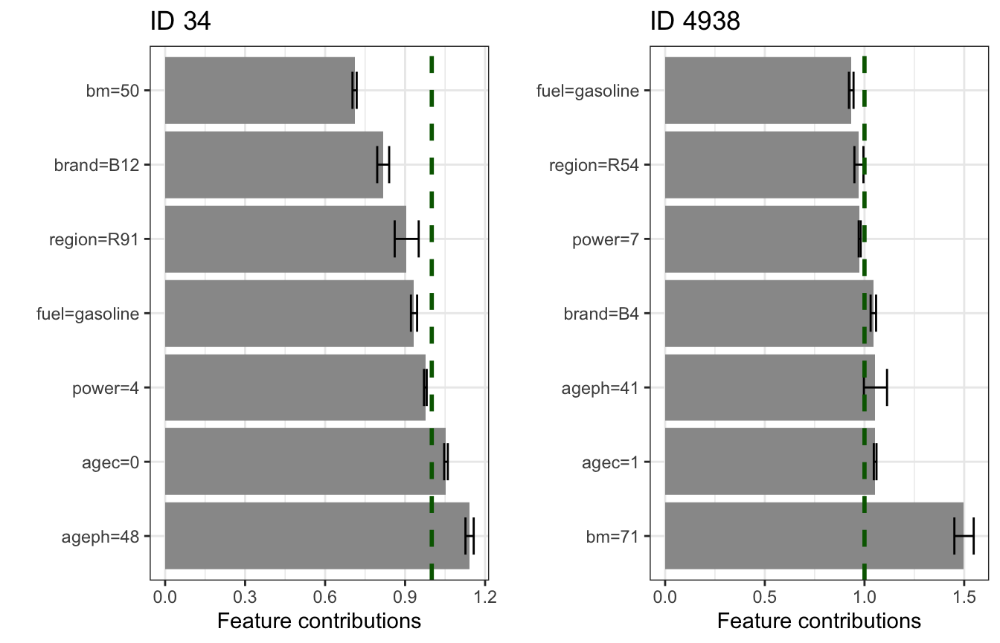

vignettes/maidrr.Rmd
maidrr.Rmdlibrary(maidrr)
The maidrr package contains two motor third party liability (MTPL) insurance portfolios, one from Belgium (BE) and one from France (FR). Both will be used to illustrate the use of maidrr, so let’s have a quick look at them:
data('mtpl_be') ; str(mtpl_be, give.attr = FALSE) #> 'data.frame': 163212 obs. of 14 variables: #> $ id : int 1 2 3 4 5 6 7 8 9 10 ... #> $ expo : num 1 1 1 1 0.0466 ... #> $ nclaims : int 1 0 0 0 1 0 1 0 0 0 ... #> $ coverage: Factor w/ 3 levels "TPL","TPL+","TPL++": 1 2 1 1 1 1 3 1 3 2 ... #> $ ageph : int 50 64 60 77 28 26 26 58 59 34 ... #> $ sex : Factor w/ 2 levels "female","male": 2 1 2 2 1 2 2 1 2 2 ... #> $ bm : int 5 5 0 0 9 11 11 11 0 7 ... #> $ power : int 77 66 70 57 70 70 55 47 98 74 ... #> $ agec : int 12 3 10 15 7 12 8 14 3 6 ... #> $ fuel : Factor w/ 2 levels "gasoline","diesel": 1 1 2 1 1 1 1 1 1 1 ... #> $ use : Factor w/ 2 levels "private","work": 1 1 1 1 1 1 1 1 1 1 ... #> $ fleet : Factor w/ 2 levels "0","1": 1 1 1 1 1 1 1 1 1 1 ... #> $ long : num 4.36 4.36 4.36 4.36 4.36 ... #> $ lat : num 50.8 50.8 50.8 50.8 50.8 ... data('mtpl_fr') ; str(mtpl_fr, give.attr = FALSE) #> 'data.frame': 668892 obs. of 11 variables: #> $ id : int 139 190 414 424 463 606 622 811 830 975 ... #> $ nclaims: num 1 1 1 2 1 1 1 1 1 1 ... #> $ expo : num 0.75 0.14 0.14 0.62 0.31 0.84 0.75 0.76 0.68 0.73 ... #> $ power : Ord.factor w/ 12 levels "4"<"5"<"6"<"7"<..: 4 9 1 7 2 7 2 2 1 6 ... #> $ agec : int 1 5 0 0 0 6 0 0 10 0 ... #> $ ageph : int 61 50 36 51 45 54 34 44 24 60 ... #> $ bm : int 50 60 85 100 50 50 64 50 105 50 ... #> $ brand : Factor w/ 11 levels "B1","B10","B11",..: 4 4 4 4 4 4 4 4 1 4 ... #> $ fuel : Factor w/ 2 levels "diesel","gasoline": 2 1 2 2 2 1 2 2 2 2 ... #> $ popdens: int 27000 56 4792 27000 12 583 1565 3317 3064 570 ... #> $ region : Factor w/ 22 levels "R11","R21","R22",..: 1 6 1 1 16 21 8 21 1 21 ...
The details on all the features included in the BE and FR portfolio are available in the package documentation. These can be retrieved via ?maidrr::mtpl_be and ?maidrr::mtpl_fr for the BE and FR portfolio respectively.
A Poisson GBM is trained on each MTPL portfolio in order to model and predict the claim frequency, i.e., the number of claims filed by a policyholder. Note that the tuning parameter values are chosen rather arbitrarily as the tuning of an optimal black box algorithm is not the purpose of this vignette. The goal of maidrr is to obtain an interpretable surrogate model that approximates your black box as closely as possible. Let’s get started!
library(gbm) set.seed(54321) gbm_be <- gbm(nclaims ~ offset(log(expo)) + ageph + power + bm + agec + coverage + fuel + sex + fleet + use, data = mtpl_be, distribution = 'poisson', shrinkage = 0.01, n.trees = 500, interaction.depth = 3) gbm_fr <- gbm(nclaims ~ offset(log(expo)) + ageph + power + bm + agec + fuel + brand + region, data = mtpl_fr, distribution = 'poisson', shrinkage = 0.01, n.trees = 500, interaction.depth = 3)
This section describes the four main functions in maidrr that facilitate the workflow from black box to surrogate:
insights: obtain insights from a black box model in the form of partial dependence (PD) feature effects.segmentation: use PDs to group feature values/levels and segment observations in a data-driven way.surrogate: fit a surrogate generalized linear model (GLM) with factor features to the segmented data.explain: explain the prediction of a surrogate GLM via the contribution of all features (and interactions).These operations are designed in a way that allows for piping via %>% from magrittr to create a neat workflow: bb_fit %>% insights(...) %>% segmentation(...) %>% surrogate(...) %>% explain(...)
Call insights(mfit, vars, data, interactions = 'user', hcut = 0.75, pred_fun = NULL, fx_in = NULL) with arguments:
mfit: fitted model object (e.g., a “gbm” or “randomForest” object) to get insights on.vars: character vector specifying the features of which you want to get a better understanding.data: data frame containing the original training data.interactions: string specifying how to deal with interaction effects (only two-way interactions allowed).
"user": specify the two-way interactions yourself in vars as the string "var1_var2". For example, to obtain the interaction effect between the age of the policyholder and power of the car, specify the following three components in vars: "ageph", "power" and "ageph_power"."auto": automatic selection of the most important two-way interactions, determined by hcut.hcut: numeric in the range [0,1] specifying the cut-off value for the normalized cumulative H-statistic over all two-way interactions between the features in vars. In a nutshell: 1) Friedman’s H-statistic, measuring interaction strength, is calculated for all two-way interactions between the features in vars. 2) Interactions are ordered from most to least important and the normalized cumulative sum of the H-statistic is calculated. 3) The minimal set of interactions which exceeds the value of hcut is retained in the output.
hcut = 0: only retain the single most important interaction.hcut = 1: retain all possible two-way interactions.pred_fun: optional prediction function for the model in mfit to calculate feature effects, which should be of the format function(object, newdata) mean(predict(object, newdata, ...)). See the argument pred.fun in the pdp::partial function, on which maidrr relies to calculate model insights. This function allows to calculate effects for model classes which are not supported by pdp::partial.fx_in: optional named list of data frames containing feature effects for features in vars that are already calculated beforehand, to avoid having to calculate these again. A possible use case is to supply the main effects such that only the interaction effects still need to be calculated. Precalculated interactions are ignored when interactions = "auto", but can be supplied when interactions = "user". In case of the latter, it is important to make sure that you supply the pure interaction effects (more on this later).To illustrate the use of the argument pred_fun, we define the following function for our GBMs:
gbm_fun <- function(object, newdata) mean(predict(object, newdata, n.trees = object$n.trees, type = 'response'))
For the FR portfolio, we ask for the effects on all features in the GBM and one user-specified interaction:
fx_vars_fr <- gbm_fr %>% insights(vars = c(gbm_fr$var.names, 'power_fuel'), data = mtpl_fr, interactions = 'user', pred_fun = gbm_fun)
For the BE portfolio, we ask for the effects on all features in the GBM and the auto-selected interactions:
fx_vars_be <- gbm_be %>% insights(vars = gbm_be$var.names, data = mtpl_be, interactions = 'auto', hcut = 0.75, pred_fun = gbm_fun)
The output is a named list of tibble objects containing the effects, one for each feature and interaction:
class(fx_vars_be) #> [1] "list" names(fx_vars_be) #> [1] "ageph" "power" "bm" "agec" "coverage" #> [6] "fuel" "sex" "fleet" "use" "bm_agec" #> [11] "ageph_power" "power_bm" "power_agec"
The tibble for a main effect has 3 columns with standardized names x, y, w containing the feature value, the effect and the number of observations counts in data respectively:
fx_vars_be[['ageph']] #> # A tibble: 78 x 3 #> x y w #> <int> <dbl> <dbl> #> 1 18 0.184 16 #> 2 19 0.184 116 #> 3 20 0.184 393 #> 4 21 0.176 700 #> 5 22 0.171 952 #> 6 23 0.171 1379 #> 7 24 0.170 2028 #> 8 25 0.168 2672 #> 9 26 0.166 2941 #> 10 27 0.160 3130 #> # … with 68 more rows
The tibble for an interaction effect has 4 columns with standardized names x1, x2, y, w containing the feature values, the effect and the number of observations counts in data respectively:
fx_vars_be[['bm_agec']] #> # A tibble: 1,127 x 4 #> x1 x2 y w #> <int> <int> <dbl> <dbl> #> 1 0 0 0.0161 85 #> 2 0 1 0.0147 3356 #> 3 0 2 0.0162 5509 #> 4 0 3 0.0162 5024 #> 5 0 4 0.0157 5065 #> 6 0 5 0.0155 4996 #> 7 0 6 0.0148 5795 #> 8 0 7 0.0139 5283 #> 9 0 8 0.0132 5321 #> 10 0 9 0.0131 4624 #> # … with 1,117 more rows
Notice the difference in the scale of the feature effect, contained in column y, for a main and interaction effect. This comes from the fact that the interaction effects are calculated as pure interactions by subtracting both 1D effects from the 2D effect. Therefore, the main effects will be centered around the observed claim frequency, which equals to 0.1392 for the BE portfolio, while the interaction effects are centered around zero:
unlist(lapply(fx_vars_be, function(fx) weighted.mean(fx$y, fx$w))) #> ageph power bm agec coverage #> 0.1397163010 0.1404287758 0.1395011937 0.1412762579 0.1409791926 #> fuel sex fleet use bm_agec #> 0.1402338538 0.1410778289 0.1405665604 0.1406186455 0.0143610014 #> ageph_power power_bm power_agec #> 0.0001271602 -0.0073319238 0.0016279122
The function maidrr::plot_pd can be used to visualize the effects. This is illustrated for a continuous feature in the BE portfolio and a categorical feature in the FR portfolio, where darker colours or larger dots indicate higher observation counts for those feature values:
gridExtra::grid.arrange(fx_vars_be[['ageph']] %>% plot_pd + ggtitle('MTPL BE'), fx_vars_fr[['brand']] %>% plot_pd + ggtitle('MTPL FR'), ncol = 2)
The function maidrr::plot_pd can also be used to visualize the interactions. This is illustrated for two continuous features in the BE portfolio and two categorical features in the FR portfolio. It is important to understand that these represent corrections on the main effects of those features. So young policyholders driving a high powered car receive an extra penalty on top of their main effects in the BE portfolio. In the FR portfolio one can conclude that for low powered cars diesel is more risky than gasoline, but this behaviour reverses as of power level 7 and the difference becomes even bigger as of power level 9.
gridExtra::grid.arrange(fx_vars_be[['ageph_power']] %>% plot_pd + ggtitle('MTPL BE'), fx_vars_fr[['power_fuel']] %>% plot_pd + ggtitle('MTPL FR'), ncol = 1)
The goal of the maidrr procedure is to group values/levels within a feature which are showing similar behaviour. Regions where the effect is quite stable can be grouped together, for example:
Performing such a grouping in an optimal, automatic and data-driven way is the goal of maidrr, stay tuned!
Note on variable selection: In the above examples we simply used all the features from the GBM (via $var.names on the gbm object). You might want to exclude unimportant features from your analysis to save computation time when many features are used in your black box model. The functions maidrr::get_vi and maidrr::plot_vi allow to obtain some insights on the important features in the black box. The former calculates variable importance scores for all features in the model (tibble), while the latter plots the results (ggplot). These functions can be used to determine which features to supply to the vars argument in insights.
gridExtra::grid.arrange(gbm_be %>% get_vi %>% plot_vi + ggtitle('MTPL BE'), gbm_fr %>% get_vi %>% plot_vi + ggtitle('MTPL FR'), ncol = 2)
The function insights streamlines the exploration process by making use of several maidrr helper functions:
get_pd: calculates the partial dependence (PD) effect for a specific feature (1D) or pair of features (2D).get_grid: determines the grid on which to evaluate the PD effect (based on the observed data values).interaction_pd: computes the pure interaction effect by subtracting both 1D PDs from the 2D PD.interaction_strength: calculates Friedman’s H-statistic for the interaction strength of two features.These functions can be used on a stand-alone basis to perform your own tailored analysis. Details on the use of these functions and input requirements are available in the documentation of maidrr.
Call segmentation(fx_vars, data, type, values) with arguments:
fx_vars: list of data frames containing the feature effects, preferably the output of maidrr::insights.data: data frame containing the original training data.type: string specifying the type of segmentation to perform. There are two options:
"ngroups": the number of groups to use for grouping the features."lambdas": the optimal number of groups are determined by the penalized loss (formula below).values: numeric value or named numeric vector with the values for ngroups of lambdas.
fx_vars.length(values) == length(fx_vars) and names(values) must be the same as the comment attributes of the effects in fx_vars as detemrined by unlist(lapply(fx_vars, comment)).For any feature, let n be the unique number of observed levels/values in the data and y the calculated effect for each level/value. When the feature is split in k groups, let g represent the average value of y within the groups. A penalized loss function is defined as follows: \[ \frac{1}{n} \sum_{i=1}^{n} \left( y_i - g_i \right)^2 + \lambda \log(k) \,. \] The first part measures how well the effect y is approximated by the grouped variant g in the form of a mean squared error over all levels/values of the feature. The second part measures the complexity of the grouping by means of the common logarithm of the number of groups k for the feature. The penalty parameter \(\lambda\) acts as a bias-variance trade-off. A low value will allow a lot of groups, resulting in an accurate approximation of the effect. A high value will enforce using fewer groups, resulting in a coarse approximation of the effect. For a specified value of \(\lambda\), the optimal number of groups k follows by minimizing the penalized loss function. The grouping in maidrr is done via the Ckmeans.1d.dp package.
We segment the BE portfolio by specifying feature-specific number of groups. The grouped features are added to the data with a trailing underscore in their column name:
gr_data_be <- fx_vars_be %>% segmentation(data = mtpl_be, type = 'ngroups', values = setNames(c(7, 4, 9, 3, 2, 2, 2, 1, 1, 2, 3, 4, 2), unlist(lapply(fx_vars_be, comment)))) head(gr_data_be) #> id expo nclaims coverage ageph sex bm power agec fuel use #> 1 1 1.00000000 1 TPL 50 male 5 77 12 gasoline private #> 2 2 1.00000000 0 TPL+ 64 female 5 66 3 gasoline private #> 3 3 1.00000000 0 TPL 60 male 0 70 10 diesel private #> 4 4 1.00000000 0 TPL 77 male 0 57 15 gasoline private #> 5 5 0.04657534 1 TPL 28 female 9 70 7 gasoline private #> 6 6 1.00000000 0 TPL 26 male 11 70 12 gasoline private #> fleet long lat ageph_ power_ bm_ agec_ coverage_ #> 1 0 4.35522 50.84539 [50, 57] [68, 170] [3, 6] [0, 17] {TPL} #> 2 0 4.35522 50.84539 [58, 95] [39, 67] [3, 6] [0, 17] {TPL+, TPL++} #> 3 0 4.35522 50.84539 [58, 95] [68, 170] [0, 1] [0, 17] {TPL} #> 4 0 4.35522 50.84539 [58, 95] [39, 67] [0, 1] [0, 17] {TPL} #> 5 0 4.35522 50.84539 [27, 29] [68, 170] [8, 9] [0, 17] {TPL} #> 6 0 4.35522 50.84539 [21, 26] [68, 170] [11, 15] [0, 17] {TPL} #> fuel_ sex_ fleet_ use_ bm_agec_ ageph_power_ power_bm_ #> 1 {gasoline} {male} {0, 1} {private, work} 2 2 2 #> 2 {gasoline} {female} {0, 1} {private, work} 2 2 2 #> 3 {diesel} {male} {0, 1} {private, work} 2 2 2 #> 4 {gasoline} {male} {0, 1} {private, work} 2 2 2 #> 5 {gasoline} {female} {0, 1} {private, work} 2 2 2 #> 6 {gasoline} {male} {0, 1} {private, work} 2 2 3 #> power_agec_ #> 1 2 #> 2 2 #> 3 2 #> 4 2 #> 5 2 #> 6 2 gr_data_be %>% dplyr::select(dplyr::ends_with('_')) %>% dplyr::summarise_all(dplyr::n_distinct) #> ageph_ power_ bm_ agec_ coverage_ fuel_ sex_ fleet_ use_ bm_agec_ #> 1 7 4 9 3 2 2 2 1 1 2 #> ageph_power_ power_bm_ power_agec_ #> 1 3 4 2
We segment the FR portfolio by specifying a single \(\lambda\) value for all features and the interaction:
gr_data_fr <- fx_vars_fr %>% segmentation(data = mtpl_fr, type = 'lambdas', values = 0.000001) gr_data_fr %>% dplyr::select(dplyr::ends_with('_')) %>% dplyr::summarise_all(dplyr::n_distinct) #> ageph_ power_ bm_ agec_ fuel_ brand_ region_ power_fuel_ #> 1 9 2 15 3 2 5 8 1
It is possible to use maidrr::plot_pd with maidrr::group_pd to get an idea of the actual grouping of features:
gridExtra::grid.arrange(fx_vars_be[['ageph']] %>% group_pd(ngroups = 7) %>% plot_pd + ggtitle('MTPL BE'), fx_vars_fr[['brand']] %>% group_pd(ngroups = 5) %>% plot_pd + ggtitle('MTPL FR'), ncol = 2)

The same can be done for the two interaction effects that we saw earlier:
gridExtra::grid.arrange(fx_vars_be[['ageph_power']] %>% group_pd(ngroups = 3) %>% plot_pd + ggtitle('MTPL BE'), fx_vars_fr[['power_fuel']] %>% group_pd(ngroups = 4) %>% plot_pd + ggtitle('MTPL FR'), ncol = 2)

The choice of the value(s) for \(\lambda\) is the most important aspect in the maidrr procedure, as it will determine the level of segmentation in your data. You can tune this parameter yourself or rely on the maidrr::autotune function, which is introduced later. First, we still need to cover the topic of fitting the actual surrogate model.
The function segmentation streamlines the grouping process by making use of several maidrr helper functions:
group_pd: groups the effect in an optimal way by making use of the Ckmeans.1d.dp package.optimal_ngroups: determines the optimal number of groups for an effect and a specified value of \(\lambda\).These functions can be used on a stand-alone basis to perform your own tailored analysis. Details on the use of these functions and input requirements are available in the documentation of maidrr.
Call surrogate(data, par_list) with arguments:
data: data frame containing the segmented training data, preferably the output of maidrr::segmentation.par_list: named list, constructed via alist(), with additional arguments to be passed on to glm(). Refer to ?glm for all the options, but some common examples are:
formula with a symbolic description of the GLM to be fitted.It is important to only include featues with at least 2 groups in the formula, the rest is captured by the intercept.
Let’s fit a surrogate Poisson GLM to the segmented BE portfolio with exposure as offset (same specs as GBM):
features_be <- gr_data_be %>% dplyr::select(dplyr::ends_with('_')) %>% dplyr::summarise_all(~dplyr::n_distinct(.) > 1) %>% unlist %>% which %>% names features_be #> [1] "ageph_" "power_" "bm_" "agec_" "coverage_" #> [6] "fuel_" "sex_" "bm_agec_" "ageph_power_" "power_bm_" #> [11] "power_agec_" formula_be <- as.formula(paste('nclaims ~', paste(features_be, collapse = '+'))) formula_be #> nclaims ~ ageph_ + power_ + bm_ + agec_ + coverage_ + fuel_ + #> sex_ + bm_agec_ + ageph_power_ + power_bm_ + power_agec_ glm_be <- gr_data_be %>% surrogate(par_list = alist(formula = formula_be, family = poisson(link = 'log'), offset = log(expo))) glm_be #> #> Call: glm(formula = formula_be, family = poisson(link = "log"), data = data, #> offset = log(expo)) #> #> Coefficients: #> (Intercept) ageph_[18, 20] ageph_[21, 26] #> -2.19832 0.34812 0.18439 #> ageph_[27, 29] ageph_[30, 31] ageph_[50, 57] #> 0.10251 0.04566 -0.07404 #> ageph_[58, 95] power_[10, 38] power_[173, 243] #> -0.22054 -0.14413 0.92671 #> power_[68, 170] bm_[10, 10] bm_[11, 15] #> 0.10959 0.59858 0.78451 #> bm_[16, 17] bm_[18, 22] bm_[2, 2] #> 0.94017 0.95645 0.15215 #> bm_[3, 6] bm_[7, 7] bm_[8, 9] #> 0.31476 0.43245 0.48204 #> agec_[18, 29] agec_[30, 48] coverage_{TPL+, TPL++} #> -0.29664 -1.70068 -0.07476 #> fuel_{diesel} sex_{female} bm_agec_1 #> 0.15278 0.02158 -0.56058 #> ageph_power_1 ageph_power_3 power_bm_1 #> -0.15247 0.55170 -0.04152 #> power_bm_3 power_bm_4 power_agec_1 #> 0.05409 -0.01740 -5.59508 #> #> Degrees of Freedom: 163211 Total (i.e. Null); 163182 Residual #> Null Deviance: 89880 #> Residual Deviance: 87140 AIC: 124900
Some conclusions can be drawn fast and easily from the fitted GLM coeffients:
Let’s also fit a surrogate Poisson GLM to the segmented FR portfolio with exposure as offset:
features_fr <- gr_data_fr %>% dplyr::select(dplyr::ends_with('_')) %>% dplyr::summarise_all(~dplyr::n_distinct(.) > 1) %>% unlist %>% which %>% names features_fr #> [1] "ageph_" "power_" "bm_" "agec_" "fuel_" "brand_" "region_" formula_fr <- as.formula(paste('nclaims ~', paste(features_fr, collapse = '+'))) formula_fr #> nclaims ~ ageph_ + power_ + bm_ + agec_ + fuel_ + brand_ + region_ glm_fr <- gr_data_fr %>% surrogate(par_list = alist(formula = formula_fr, family = poisson(link = 'log'), offset = log(expo))) glm_fr #> #> Call: glm(formula = formula_fr, family = poisson(link = "log"), data = data, #> offset = log(expo)) #> #> Coefficients: #> (Intercept) ageph_[18, 19] #> -3.00517 0.25375 #> ageph_[20, 20] ageph_[21, 22] #> 0.04351 -0.15163 #> ageph_[23, 35] ageph_[36, 38] #> -0.39965 -0.22046 #> ageph_[39, 40] ageph_[41, 42] #> -0.17761 -0.08060 #> ageph_[43, 43] power_[6, 12] #> -0.01839 0.17762 #> bm_[101, 107] bm_[108, 120] #> 1.88995 1.95790 #> bm_[121, 124] bm_[125, 144] #> 2.35288 2.24336 #> bm_[147, 185] bm_[187, 230] #> 2.37733 2.96728 #> bm_[55, 57] bm_[58, 60] #> 0.46495 0.71669 #> bm_[61, 62] bm_[63, 76] #> 1.56905 0.74449 #> bm_[77, 77] bm_[78, 90] #> 1.89663 0.91610 #> bm_[91, 95] bm_[96, 100] #> 1.15974 1.56836 #> agec_[13, 15] agec_[16, 100] #> -0.20759 -0.36434 #> fuel_{diesel} brand_{B10, B11, B3, B5} #> 0.14003 0.08195 #> brand_{B12} brand_{B13, B6} #> -0.24574 0.03356 #> brand_{B14} region_{R11, R22} #> -0.19237 0.20565 #> region_{R21, R23, R25, R43} region_{R31, R42} #> 0.03975 0.14085 #> region_{R52, R53, R54, R72, R94} region_{R73, R83} #> 0.08455 -0.14305 #> region_{R74, R93} region_{R82} #> 0.23422 0.30333 #> #> Degrees of Freedom: 668891 Total (i.e. Null); 668854 Residual #> Null Deviance: 170500 #> Residual Deviance: 161500 AIC: 212300
Global model conclusions can again be drawn from the fitted GLM coefficients. However, let’s turn the focus on explaining predictions for individual observations in the next section.
Call explain(surro, instance, plt = TRUE) with arguments:
surro: surrogate GLM object of class glm, preferably the output of maidrr::surrogate.instance: single row data frame with the instance to be explained.plt: boolean whether to return a ggplot (TRUE) or the underlying data (FALSE).
plt = FALSE: the columns fit_link and se_link contain the fitted coefficient and standard error on the linear predictor scale. The column fit_resp contains the coefficient on the response scale after taking the inverse link function, while upr_conf and lwr_conf contain the upper and lower bound of a 95% confidence interval.plt = TRUE: shows the coefficient and confidence interval on the response scale. A green dashed line shows the value of the invere link function applied to zero. Features with bars close to this line have a neglegible impact on the predition.Let’s explain the prediction made by the BE GLM for two policyholders (id 34 and 4938). Notice that the prediction for the former is below the intercept of the GLM, while it is more than doubled for the latter. Why is this the case? The low risk for id 34 is mainly thanks to a low bonus-malus level and high age. Driving a high powered car increases the risk on the other hand. The high risk for id 4938 is mainly due to a high bonus-malus level and young age. Note that these contributions and confidence intervals are shown on the response scale after taking the invere link function of the coefficients. For a Poisson GLM with log-link function this implies applying the exp function on the coefficients, with contributions on the multiplicative response scale and a value of 1 indicating no contribution.
exp(coef(glm_be)['(Intercept)']) #> (Intercept) #> 0.1109892 glm_be %>% predict(newdata = gr_data_be[34, ], type = 'response') / gr_data_be[34, 'expo'] #> 34 #> 0.09217816 glm_be %>% predict(newdata = gr_data_be[4938, ], type = 'response') / gr_data_be[4938, 'expo'] #> 4938 #> 0.2518014 gridExtra::grid.arrange(glm_be %>% explain(instance = gr_data_be[34, ]) + ggtitle('ID 34'), glm_be %>% explain(instance = gr_data_be[4938, ]) + ggtitle('ID 4938'), ncol = 2)

We can follow the same approach for the FR GLM for two policyholders (id 34 and 4938). The prediction for the former is below the GLM intercept, while it is more than doubled for the latter. Why is this the case? The low risk for id 34 is mainly thanks to a low bonus-malus level and driving a car of brand B12 (we have seen this before in the PD effect). The high risk for id 4938 is mainly driven by a high bonus-malus level.
exp(coef(glm_fr)['(Intercept)']) #> (Intercept) #> 0.04953016 glm_fr %>% predict(newdata = gr_data_fr[34, ], type = 'response') / gr_data_fr[34, 'expo'] #> 34 #> 0.03873885 glm_fr %>% predict(newdata = gr_data_fr[4938, ], type = 'response') / gr_data_fr[4938, 'expo'] #> 4938 #> 0.1046914 gridExtra::grid.arrange(glm_fr %>% explain(instance = gr_data_fr[34, ]) + ggtitle('ID 34'), glm_fr %>% explain(instance = gr_data_fr[4938, ]) + ggtitle('ID 4938'), ncol = 2)

These are of course just toy examples to illustrate the functionalty of maidrr, with random segmentation choices (the values for the number of groups or \(\lambda\)). Tuning the value of \(\lambda\) is very important to obtain competitive prediction models. Therefore, we incorporate a function to automate this task for you: maidrr::autotune.
The maidrr workflow from black box to surrogate via insights %>% segmentation %>% surrogate is highly dependend on the value(s) of \(\lambda\) supplied to maidrr::segmentation. The grouping and selection of features is entirely dependend on \(\lambda\) via the penalized loss function. Any ad-hoc choice is most likely to result in a surrogate which is not really competitive with the original black box model, so it is important to choose the value(s) for \(\lambda\) in an optimal way. To automate this tuning task, maidrr contains the autotune(...) function. This function iterates over a grid of \(\lambda\)’s, calculating cross-validation errors for each grid value, and returns an optimal surrogate GLM.
Call autotune(mfit, data, vars, target, hcut = 0.75, pred_fun = NULL, lambdas = as.vector(outer(seq(1, 10, 0.1), 10^(-7:3))), nfolds = 5, strat_vars = NULL, glm_par = alist(), err_fun = mse, ncores = -1) with arguments:
mfit: fitted model object (e.g., a “gbm” or “randomForest” object) to approximate with a surrogate.data: data frame containing the original training data.vars: character vector specifying which features of data to consider for inclusion in the surrogate. Automatic feature selection will choose the best performing subset of features, possibly with interactions.target: string specifying the name of the target (or response) variable to model.hcut: numeric in the range [0,1] specifying the cut-off value for the normalized cumulative H-statistic over all two-way interactions between the features in vars. In a nutshell: 1) Friedman’s H-statistic, measuring interaction strength, is calculated for all two-way interactions between the features in vars. 2) Interactions are ordered from most to least important and the normalized cumulative sum of the H-statistic is calculated. 3) The minimal set of interactions which exceeds the value of hcut is retained in the output.
hcut = 0: only consider the single most important interaction for inclusion in the surrogate.hcut = 1: consider all possible two-way interactions for inclusion in the surrogate.hcut = -1: do not consider interactions and only use main effects of the features in vars.pred_fun: optional prediction function for the model in mfit to calculate feature effects, which should be of the format function(object, newdata) mean(predict(object, newdata, ...)). See the argument pred.fun in the pdp::partial function, on which maidrr relies to calculate model insights. This function allows to calculate effects for model classes which are not supported by pdp::partial, see this article.lambdas: numeric vector with the possible \(\lambda\) values to explore. The search grid is created automatically via maidrr::lambda_grid. This grid contains only those values of \(\lambda\) that result in a unique grouping of the full set of features. A seperate grid is generated for main and interaction effects.nfolds: integer for the number of folds to use in K-fold cross-validation.strat_vars: character (vector) specifying the feature(s) to use for stratified sampling in the creation of the folds. The default NULL implies no stratification is applied.glm_par: named list, constructed via alist(), with additional arguments to be passed on to glm() (see the section on surrogate). Note however that the argument formula will be ignored as the formula is determined automatically by the target and the selected features during the tuning process.err_fun: error function to calculate the prediction errors on the validation folds. This must be an R function which outputs a single number and takes two vectors y_pred and y_true as input for the predicted and true target values respectively. An additional input vector w_case is allowed to use case weights in the error function. The weights are determined automatically based on the weights field supplied to glm_par. The following functions are included already, see maidrr::err_fun for details:
mse: mean squared error loss function.wgt_mse: weighted mean squared error loss function.poi_dev: Poisson deviance loss function.ncores: integer specifying the number of cores to use. The default ncores = -1 uses all the available physical cores (not threads).Let’s autotune the \(\lambda\) parameter on the BE portfolio:
set.seed(5678) tune_be <- gbm_be %>% autotune(data = mtpl_be, vars = gbm_be$var.names, target = 'nclaims', hcut = 0.75, pred_fun = gbm_fun, lambdas = as.vector(outer(seq(1, 10, 0.1), 10^(-7:3))), nfolds = 5, strat_vars = c('nclaims', 'expo'), glm_par = alist(family = poisson(link = 'log'), offset = log(expo)), err_fun = poi_dev, ncores = -1)
The output of maidrr::autotune is a list with the following four elements:
slct_feat: named vector containing the selected features (names) and the optimal number of groups for each feature (values).best_surr: the optimal GLM surrogate, which is fit to all observations in data. The segmented data can be obtained via the $data attribute of the GLM fit.tune_main: the cross-validation results for the main effects as a tidy data frame. The column cv_err contains the cross-validated error, while the columns 1:nfolds contain the error on the validation folds.tune_intr: the cross-validation results for the interaction effects, in the same format as tune_main.tune_be #> $slct_feat #> ageph power bm agec fuel bm_agec #> 8 9 12 5 2 5 #> ageph_power power_bm #> 5 7 #> #> $best_surr #> #> Call: glm(formula = nclaims ~ 1 + ageph_ + power_ + bm_ + agec_ + fuel_ + #> bm_agec_ + ageph_power_ + power_bm_, family = poisson(link = "log"), #> data = data, offset = log(expo)) #> #> Coefficients: #> (Intercept) ageph_[18, 20] ageph_[21, 21] ageph_[22, 26] #> -2.221037 0.345512 0.227091 0.165859 #> ageph_[27, 29] ageph_[30, 31] ageph_[50, 57] ageph_[58, 95] #> 0.085189 0.029335 -0.077138 -0.231097 #> power_[10, 33] power_[101, 140] power_[141, 170] power_[173, 184] #> -0.146664 0.157926 0.314601 0.885155 #> power_[190, 243] power_[34, 38] power_[39, 44] power_[68, 100] #> 1.035518 -0.062037 -0.037632 0.119632 #> bm_[1, 1] bm_[10, 10] bm_[11, 13] bm_[14, 15] #> 0.116665 0.665807 0.776818 0.851777 #> bm_[16, 17] bm_[18, 22] bm_[2, 2] bm_[3, 5] #> 0.945374 0.956184 0.183380 0.321261 #> bm_[6, 6] bm_[7, 7] bm_[8, 9] agec_[0, 1] #> 0.382210 0.455965 0.542698 0.170450 #> agec_[18, 29] agec_[2, 5] agec_[30, 48] fuel_{diesel} #> -0.278210 -0.070014 -1.706916 0.149285 #> bm_agec_2 bm_agec_3 bm_agec_5 ageph_power_1 #> -0.545768 -0.134153 0.154437 -0.211970 #> ageph_power_3 ageph_power_4 ageph_power_5 power_bm_1 #> 0.064931 0.560979 0.808275 -0.153419 #> power_bm_2 power_bm_4 power_bm_5 power_bm_6 #> -0.075525 -0.043317 0.103786 -0.251433 #> power_bm_7 #> -0.002169 #> #> Degrees of Freedom: 163211 Total (i.e. Null); 163167 Residual #> Null Deviance: 89880 #> Residual Deviance: 86980 AIC: 124800 #> #> $tune_main #> # A tibble: 53 x 16 #> lambda_main ageph power bm agec coverage fuel sex fleet use `1` #> <dbl> <int> <int> <int> <int> <int> <int> <int> <int> <int> <dbl> #> 1 0.000008 8 9 12 5 1 2 1 1 1 0.535 #> 2 0.0000082 7 8 12 5 1 2 1 1 1 0.535 #> 3 0.0000052 9 10 12 6 2 2 1 1 1 0.535 #> 4 0.00000500 10 10 12 6 2 2 1 1 1 0.535 #> 5 0.0000045 14 11 12 6 2 2 1 1 1 0.535 #> 6 0.0000048 14 10 12 6 2 2 1 1 1 0.535 #> 7 0.0000072 8 10 12 5 1 2 1 1 1 0.535 #> 8 0.000010 6 7 12 4 1 2 1 1 1 0.535 #> 9 0.0000061 8 10 12 6 1 2 1 1 1 0.535 #> 10 0.00000950 7 7 12 4 1 2 1 1 1 0.535 #> # … with 43 more rows, and 5 more variables: `2` <dbl>, `3` <dbl>, `4` <dbl>, #> # `5` <dbl>, cv_err <dbl> #> #> $tune_intr #> # A tibble: 37 x 10 #> lambda_intr bm_agec ageph_power power_bm `1` `2` `3` `4` `5` cv_err #> <dbl> <int> <int> <int> <dbl> <dbl> <dbl> <dbl> <dbl> <dbl> #> 1 0.000029 5 5 7 0.535 0.534 0.533 0.533 0.533 0.534 #> 2 0.00003 5 5 6 0.535 0.534 0.533 0.533 0.533 0.534 #> 3 0.000041 5 4 6 0.535 0.534 0.533 0.533 0.533 0.534 #> 4 0.000058 5 4 4 0.535 0.534 0.533 0.533 0.533 0.534 #> 5 0.00006 5 3 4 0.535 0.534 0.533 0.533 0.533 0.534 #> 6 0.000043 5 4 5 0.535 0.534 0.533 0.533 0.533 0.534 #> 7 0.000086 5 2 4 0.535 0.534 0.533 0.533 0.533 0.534 #> 8 0.000096 3 2 4 0.535 0.534 0.533 0.533 0.533 0.534 #> 9 0.000025 6 7 7 0.535 0.534 0.533 0.534 0.533 0.534 #> 10 0.000018 7 7 8 0.535 0.534 0.533 0.534 0.533 0.534 #> # … with 27 more rows
Let’s also autotune the \(\lambda\) parameter on the FR portfolio:
set.seed(5678) tune_fr <- gbm_fr %>% autotune(data = mtpl_fr, vars = gbm_fr$var.names, target = 'nclaims', hcut = 0.75, pred_fun = gbm_fun, lambdas = as.vector(outer(seq(1, 10, 0.1), 10^(-7:3))), nfolds = 5, strat_vars = c('nclaims', 'expo'), glm_par = alist(family = poisson(link = 'log'), offset = log(expo)), err_fun = poi_dev, ncores = -1)
These are the optimal groupings obtained for the effects that were shown earlier in this vignette:
gridExtra::grid.arrange(fx_vars_be[['ageph']] %>% group_pd(ngroups = tune_be$slct_feat['ageph']) %>% plot_pd + ggtitle('MTPL BE'), fx_vars_fr[['brand']] %>% group_pd(ngroups = tune_fr$slct_feat['brand']) %>% plot_pd + ggtitle('MTPL FR'), ncol = 2)
gridExtra::grid.arrange(fx_vars_be[['ageph_power']] %>% group_pd(ngroups = tune_be$slct_feat['ageph_power']) %>% plot_pd + ggtitle('MTPL BE'), fx_vars_fr[['power_fuel']] %>% group_pd(ngroups = tune_fr$slct_feat['power_fuel']) %>% plot_pd + ggtitle('MTPL FR'), ncol = 2)